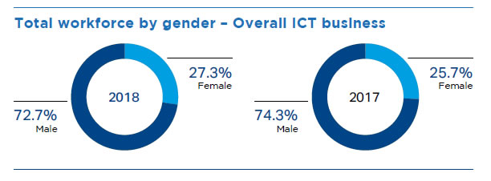
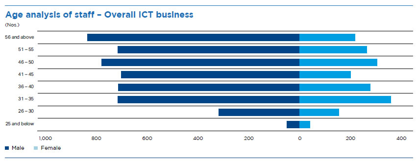
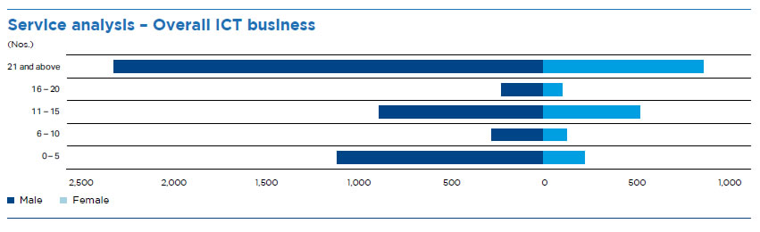
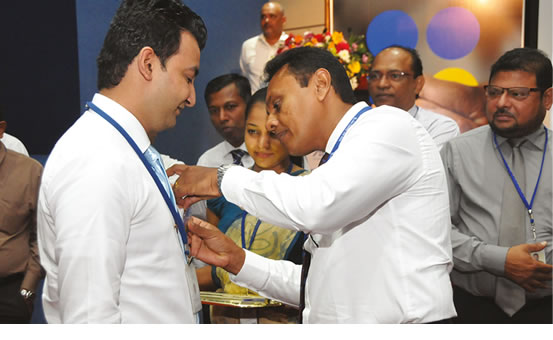
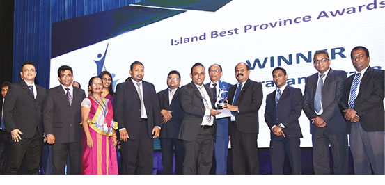

Management discussion and analysis
Employee Capital


SLT’s employees play an important role as we transform ourselves into the leading digital service provider (DSP) in Sri Lanka and a key regional player. We provide a rewarding working environment for our employees and we continue to improve our employee experience in an open and transparent manner.
Workforce Profile
Total workforce by employment type
| Type of employment | 2018 | 2017 | |||||
| Fixed ICT operations | Mobile ICT operations | Overall ICT business | Fixed ICT operations | Mobile ICT operations | Overall ICT business | ||
| Permanent | 5,364 | 1,165 | 6,529 | 5,390 | 1,147 | 6,537 | |
| Outsourced | 1,869 | 156 | 2,025 | 2,148 | 196 | 2,344 | |
| Contract | 8 | 113 | 121 | 23 | 189 | 212 | |
| Total | 7,241 | 1,434 | 8,675 | 7,561 | 1,532 | 9,093 | |
Total workforce by gender*
| Type of employment | Female | (%) | Male | (%) | Total 2018 |
| Fixed ICT operations | 1,432 | 79 | 3,940 | 82 | 5,372 |
| Mobile ICT operations | 386 | 21 | 892 | 18 | 1,278 |
| Overall ICT business | 1,818 | 100 | 4,832 | 100 | 6,650 |
* Excludes outsourced staff


* Excludes outsourced staff

Recruitment
SLT constantly seeks to recruit new talent by seeking out specialists, leaders, and future executives. Efforts around talent acquisition focuses on long-term human resources planning and finding candidates for positions that require skills that are specific to the Company and industry and vital for ensuring the continued growth of the business. All recruitments are based on SLT’s Staff Recruitment and Promotion Scheme (SRPS).
Employee recruitment by age and business segment
| Age Category | Fixed ICT | Mobile ICT | Total ICT |
| 18-20 years | 0 | 2 | 2 |
| 21-30 years | 44 | 103 | 147 |
| 31-40 years | 295 | 15 | 310 |
| 41-50 years | 161 | 2 | 163 |
| 51-55 years | 1 | 0 | 1 |
| 56 years and above | 0 | 0 | 0 |
| Total | 501 | 122 | 623 |
Turnover
Turnover at SLT may occur through the following scenarios:
- Employees may conclude their employment at SLT subject to giving prior notice as per their letters of appointment.
- SLT may choose to terminate an employee’s employment subject to the provisions of the respective labour regulations.
- Retirement at the 55 years of age, with extensions up to 60 years of age upon request subject to performance, discipline and conduct, recommendations of executive supervisors, and the discretion of the management.
Employee turnover by gender and business segment
| Fixed ICT (%) | Mobile ICT (%) | |
| Female | 8.67 | 5.86 |
| Male | 11.35 | 5.81 |
Note: Indicates percentage of turnover per gender.
Employee turnover by grade and business segment
| Grade | 2018 | 2017 | ||
| Fixed ICT operations (%) | Mobile ICT operations (%) | Fixed ICT operations (%) | Mobile ICT operations (%) | |
| Senior management | 8.20 | 4.44 | 9.90 | 1.44 |
| Middle management | 5.30 | 5.86 | 2.50 | 3.55 |
| Executives | 10.90 | 5.94 | 7.60 | 6.77 |
| Non-executive staff | 10.70 | 0.00 | 5.00 | 0.00 |
| Total | 10.60 | 5.82 | 5.40 | 5.61 |
Note: Indicates percentage of turnover per grade.
Occupational health and safety
SLT has established a safe and healthy working environment and works to maintain safety standards in the workplace. Moreover, SLT conducts awareness programmes for better health practices periodically and conducts the Suwatha health screening programme annually for all employees across the island. Additionally, the SLT medical assistance programme and Agrahara health insurance programme cover all staff.

Employee relations and engagement
Engaging with employees and having clear lines of communication with them are essential to them being involved in their work and enthusiastic about working for SLT. SLT has worked to improve the employee experience, such as changing old policies to keep up with the rapidly changing digital economy by introducing a “work from nearest office” pilot project, a policy for flexible working hours, and automating the performance management process at SLT through the Enterprise Resource Planning (ERP) system.
SLT employs various means to reach out to our employees, including departmental meetings, briefings, involvement in community projects, and internal newsletters. An HR blog offers employees an outlet through which they can offer insight and comment and suggest on HR related matters. SLT utilises info-mail, media-watch, intranet updates, socio mail, and an internal newsletter, “Amathuma”, to keep employees up to date on important decisions made in the Company, Company activities, and developments in the ICT industry.
SLT believes that Employee Satisfaction (ESat) is critically important to achieve customer satisfaction. Employee satisfaction was measured on a quarterly basis through an employee survey throughout the year; Contact centre agents recorded an employee satisfaction of 75% in all quarters of 2018. Parameters that were measured in ESat survey included IT infrastructure and system availability to employees, working environment, work patterns, supervisory leadership, support obtained from immediate superiors, and training and development opportunities.
Benefits and promotions
Employees of SLT enjoy a broad range of benefits and welfare initiatives, including:
- Attractive EPF/ETF contributions
- Attractive bonuses paid each year
- Leave bonus for unutilised leave
- Medical centre, and medical and insurance schemes
- Fitness programmes including Zumba, yoga, karate, swimming, cycling, etc.
- Sports activities and associations for cricket, football, netball, athletics, volleyball, table tennis, badminton, etc.
- Financial support for higher education, including MSc, MBA, and other postgraduate studies
- Training programmes
- Workmens’ compensation for disabilities/accidents during work
- Allowances for risk, overnight, subsistence, transport, meals, foreign training, etc.
- Monthly and annual sales programmes
- Gratuity and pension
- Death donations to family members
- Vehicle scheme
- Holiday bungalows
- Cafeteria facilities
- Loan facilities and reimbursement of housing loan interest
- Leave entitlements, overseas leave, and leave for Government elections
- Telephone subscriptions and mobile phone purchase reimbursement
- Religious activities such as Buddhist programmes, Christmas activities, etc.
SLT believes that the satisfaction and well-being of our employees contributes to an engaging work environment that in turn reflects positively on the Group in the minds of our stakeholders. SLT also works to improve the work-life balance of our employees through initiatives such as the Telecom Games, Provincial meets, and Regional awareness programmes aimed at improving relationships amongst regional staff.
Opportunities for promotion are available to employees based on their professional qualifications, performance, and experience. Employees are eligible for promotions if they qualify for the criteria defined in the SLT Staff Recruitment and Promotion Scheme. Candidates are selected for promotions through written examinations and/or interviews. In 2018, there were 46 executive level promotions and 863 promotions for non-executive employees.
Training and development
SLT considers the development of our employees to be essential to the growth of SLT, in addition to being beneficial to employee retention and loyalty. Employee training and development is conducted at an individual and departmental level. Employees are provided with a combination of formal training, on-the-job experience, and regular feedback from their managers through an appraisal system that helps them and SLT identify what areas require more focus. SLT employees completed a total of 77,394 hours of training during January – December 2018.
Unions and grievance handling
SLT has maintained social dialogue with trade unions since its privatisation. An open-door policy with trade unions; any trade union can meet with the Chief Human Resources Officer (CHRO) at any time and positive solutions are approached together for all issues. At least one formal discussion is conducted with all trade unions every three months. 18 active trade unions are recognised by the Company and almost all employees belong to at least one trade union.
Furthermore, a Grievance Handling Committee has been established along with a systematic and comprehensive mechanism to handle any staff grievances and issues. A detailed whistle-blowing policy is in place to allow any employee to safely and anonymously report any acts of misconduct that they have been subject to or witnessed.
